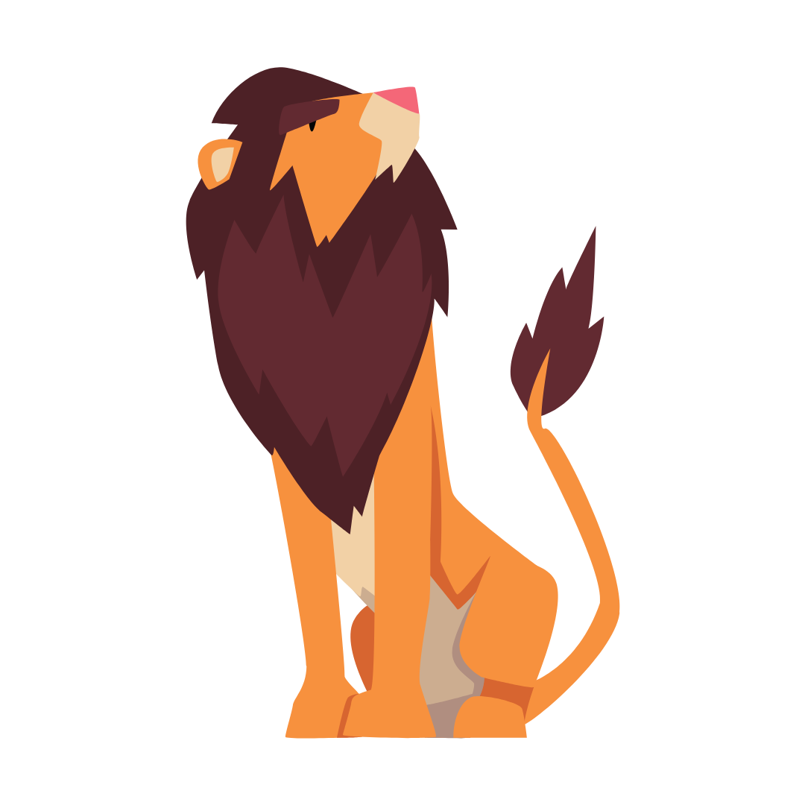
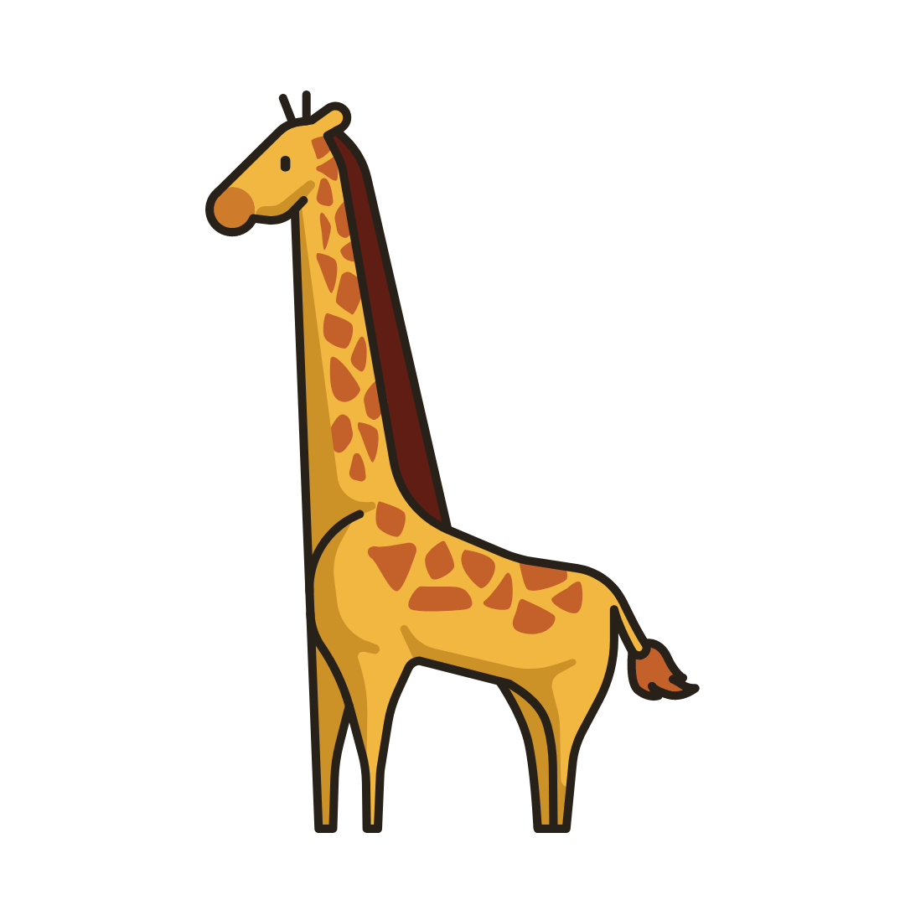

A lion’s roar can be heard from as far as 5 miles away.
An elephant trunk has up to 40,000 muscles.
Polar Bear's skin is Black only the fur is white.

Giraffes only sleep for 5 to 30 mins in a 24-hour period! They take quick naps of 1 or 2 min at a time
Since every tiger has their own pattern on their fur, they are all unique!